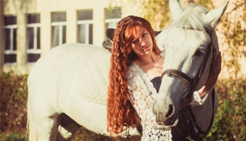
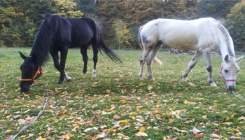
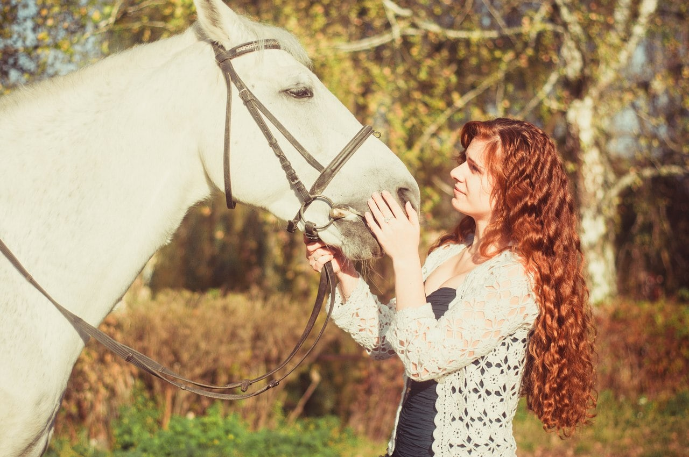

Орловський рисак вітчизняна порода запряжних коней; виведена в кінці 18 — на поч. 19 ст. у Хрєновському кінному заводі Воронезької губ. кіннозаводчиком А. Г. Орловим-Чесменським і коневодом В. І. Шишкіним методом складного відтворювального схрещування. У створенні О. р. п. к. використано арабську породу коней, датську, голландську, макленбурзьку та ін.
Сучасний орловський рисак має гармонійно розвинені форми тіла, міцний кістяк і спадково закріплену здатність до швидкої рисі.
Коні цієї породи великі, масивні, працездатні й витривалі, мають жвавий темперамент, але пізньоспілі. Масть здебільшого сіра, ворона, гніда, зрідка руда. Рекорд жвавості на 1600 м — 2 хв 0,01 сек (жеребець Піон, 1974). Коні орловської породи є основними поліпшувачами місцевих коней майже в усіх районах СРСР (крім тайгових, гірських, напівпустельних). На Україні їх розводять у Дібровському, Запорізькому і Лимарівському кінних заводах. Була використана при виведенні російської рисистої породи коней.
Російський рисак — порода легкозапряжних коней, виведена в СРСР схрещуванням орловської рисистої породи коней з американським рисаком. Як порода затверджена 1949. Для коней цієї породи характерна суха міцна конституція, добре розвинуті мускулатура і сухожилки. Осн. масть гніда, рідше ворона, руда. Коні мають високу жвавість, добру ристь (див. Алюри), деякі з них схильні до іноході. За жвавістю рос. рисак перевищує орловського. Майже всі абсолютні рекорди в СРСР встановлені рос. рисаком. На Моск. іподромі (1975) встановлено всесоюз. рекорд жвавості на 1600 м —1 хв 58,7 сек (жеребець Властний з Дібровського кінного заводу). Р. р. п. к.— цінна плем. і спортивна порода коней, яку використовують для поліпшення місцевих запряжних коней та для кінно-спортивних змагань в СРСР і за кордоном. Плем. роботу з породою ведуть на кінних заводах СРСР, в т. ч. на Україні на Діб-ровському, Лимарівському та Запорізькому. Для поліпшення жвавості рос. рисака схрещують з американськими рисаками і французькою рисистою породою коней.
Найбільш розповсюджена порода коней в Україні. Нині поголів'я цієї породи в нашій країні налічує близько 140 тис. голів, або 34,9% від загальної кількості коней.Російська рисиста порода коней виведена методом між-породного схрещування орловської рисистої породи з американською стандартбредною з подальшим розведенням помісей "у собі". Ця порода створювалася в умовах інтенсивної годівлі концкормами, стайнево-пасовищного утримання, раннього тренування і випробувань, а також добору та підбору за жвавістю та бажаним запряжним типом.Початком створення породи вважаються 90-ті роки минулого століття, коли в Росії почалося масове схрещування орловських кобил і американських рисистих жеребців. Цьому значною мірою сприяло введення в іподромні випробування у 1887 р. тоталізатора та його поширення, що дало змогу власникам висококласних коней вигравати значні призові суми, розміри яких щорічно зростали.
Коні цієї породи великі, масивні, працездатні й витривалі, мають жвавий темперамент, але пізньоспілі. Масть здебільшого сіра, ворона, гніда, зрідка руда. Рекорд жвавості на 1600 м — 2 хв 0,01 сек (жеребець Піон, 1974). Коні орловської породи є основними поліпшувачами місцевих коней майже в усіх районах СРСР (крім тайгових, гірських, напівпустельних). На Україні їх розводять у Дібровському, Запорізькому і Лимарівському кінних заводах. Була використана при виведенні російської рисистої породи коней. Загалом же у створенні російської рисистої породи коней можна виділити три періоди. Перший (90-ті роки минулого століття — 1914 р.) відомий тим, що розпочалося схрещування орловських кобил з американськими жеребцями. Починаючи з останнього десятиліття XIX ст. і до виникнення першої світової війни в Росію було завезено 156 жеребців і 220 кобил американської стан-дартбредної породи. Серед завезених коней були коні видатні, однак часто зустрічалися й досить посередні. Найбільший вплив на формування породи справили жеребці: Кресцеус (2.02,2); Агойша (2.11); Альвін Молодий (2.11,9); Барон Род-жерс (2.09,6); Боб Дуглас (2.04,4); Вільбурн - М (2.14,4) та ін. У той період кіннозаводчики не ставили за мету створення нової породи, а схрещування мало промисловий характер. Другий період (1914—1927 pp.) характеризувався припиненням ввозу американських коней через початок першої світової війни. У цей період широко використовувалося схрещування помісей між собою, а також зворотне схрещування їх із жеребцями орловської породи з метою збільшення масивності та поліпшення запряжних форм. До 1932 р. в кінних заводах ще стояли американські жеребці, а їх інтенсивне використання спонукалось тим, що в 1922 р. відновились випробування рисистих коней на іподромах країни. На II Всеросійській нараді по тваринництву (1926 р.) було прийнято рішення про необхідність стандартизації рисистих порід з урахуванням вимог до користувального коня та аналізу стану племінного фонду рисаків. Третій період (1927—1949 pp.). A. M. Владикін у 1927 p., очолюючи групу вчених, за дорученням Наркомзему РСФРР склав план племінної роботи з орлово-ростопчинськими помісями, який передбачав створення нової породи. Відповідно до плану роботу виконували в усіх кінних заводах, де розводилися вказані помісі. Помісей бажаного типу розводили "в собі", а також використовували їх зворотне схрещування з орловськими рисаками і відтворювальне. Нова порода вітчизняних рисаків була затверджена в 1949 р. Коні російської рисистої породи поєднали в собі великий зріст, нарядність форм та масивність орловських рисаків з високою жвавістю американської стандартбредної породи коней. Сучасні російські рисаки мають міцну суху конституцію, пряму спину, добре виповнений м'язами поперек, правильної будови кінцівки, міцні сухожилки та зв'язки суглобів. З вад екстер'єру можна вважати опущений круп, в окремих тварин, шаблюватість задніх та розкид передніх кінцівок, м'які й прямі бабки. Американські стандартбредні жеребці, які використовуються для поліпшення жвавості російських жеребців з 1963 p., часто передають нащадкам цибатість, вкороченість, перехват під зап'ястям та понижену плодючість кобил. Середні проміри кобил 159-162-184-19,8 см. Біговий клас рисаків визначається їх жвавістю на 1600 м (табл. 1). Серед російських рисаків 729 ввійшли до класу 2.05, і за цим показником вони на рівні вимог європейського стандарту. Цьому успіху сприяла передусім висока селекційна робота і вдосконалення технології утримання, вирощування, тренування та випробування коней. Основними завданнями селекційної роботи з російською рисистою породою є підвищення жвавості, скороспілості та плодючості при збереженні великого росту і легкозапряжного типу. Основним методом поліпшення є чистопородне розведення, а також прилиття крові переважно стандартбредних коней та обмежено французьких рисаків. Чистопородні жеребці й кобили належать до ліній Подарка, Гільдейця, Трепета, Заморського Чуда, Додиря, Лоу Ганновера, Воломайта, Скотленда, Аксворті.
© Lviv Politechnik University - Tetiana Prybyla Lviv 2017